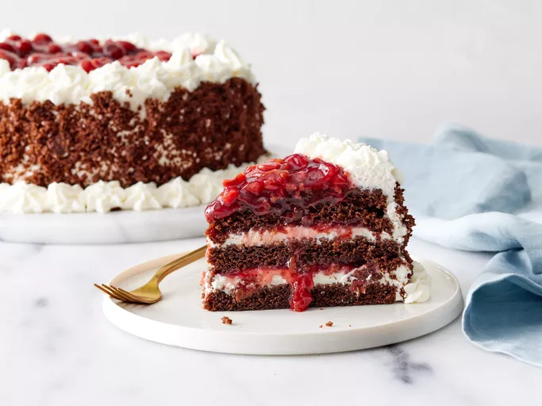

Balck Forest cake

The stunning black forest cake
This stunning black forest cake has 3 layers of moist chocolate cake with sour cherry filling and sweet whipped cream frosting in each layer and on top. The sides of the cake are decorated with cake crumbles for a gorgeous gateau fit for any special occasion!
Ingredients
- 2 ⅛ cups all-purpose flour
- 2 cups white sugar
- ¾ cup unsweetened cocoa powder
- 1 ½ teaspoons baking powder
- 3 large eggs
- 1 cup milk
Steps
- Gather all ingredients.
- reheat the oven to 350 degrees F (175 degrees C). Grease and flour two 9-inch round cake pans; line bottoms with parchment paper.
- Whisk flour, sugar, cocoa, baking powder, baking soda, and salt together in a large bowl.
- Add eggs, milk, oil, and vanilla; beat until combined.
- Pour cake batter into the prepared pans.